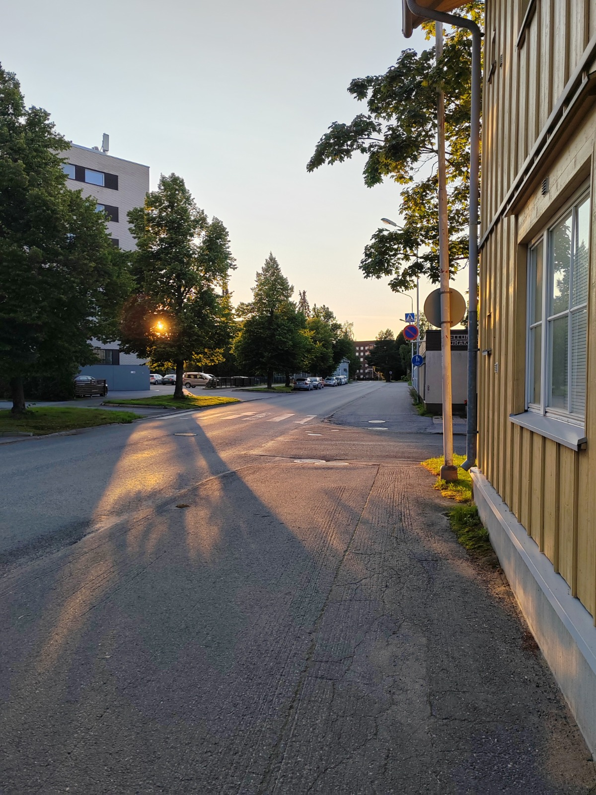

01 / Background image
A photograph behind the story
The first gallery photograph fills this card. A dark transparent overlay softens the image while keeping the heading and description clear.
S6 · Image experiments
This gallery explores three ways to present images with CSS: a softly faded background, a grayscale photograph, and an image that opens at its original size.
01 / Background image
The first gallery photograph fills this card. A dark transparent overlay softens the image while keeping the heading and description clear.

02 / Grayscale
The second photograph remains an image element. The CSS grayscale filter removes its colour, and the image scales to fit the card.
03 / Click to open
Select the photograph to open the original image file in a separate browser tab.
Click image to view full size ↗